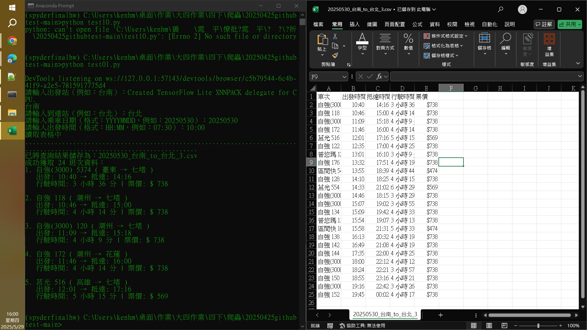

爬蟲展示
爬蟲說明
這個爬蟲程式能夠抓取網頁上符合關鍵字的連結，並輸出依據關鍵字找到的完整單詞與連結網址。 GITHUB LINK
展示截圖
程式碼與執行結果
程式與註解說明於下方區塊程式與註解說明
import requests
from bs4 import BeautifulSoup
# 設定要取頁面
url = "https://zh.wikipedia.org/zh-tw/%E6%88%98%E9%94%A440000"
# 設定關鍵字
keyword = "基因"
# 發送請求
response = requests.get(url)
response.encoding = "utf-8" # 確保文字顯示正常
# 解析 HTML
soup = BeautifulSoup(response.text, "html.parser")
# 抓取所有連結
links = soup.find_all("a", href=True)
# 過濾含有關鍵字的連結
matched_links = []
for link in links:
href = link["href"]
text = link.get_text()
# 避免非內容頁（例如#開頭或外部連結）
if keyword in text and href.startswith("/wiki/"):
full_url = "https://zh.wikipedia.org" + href
matched_links.append((text.strip(), full_url))
# 顯示結果
print(f"\n關鍵字「{keyword}」出現在以下連結：\n")
for i, (title, url) in enumerate(matched_links, 1):
print(f"{i}. {title} → {url}")